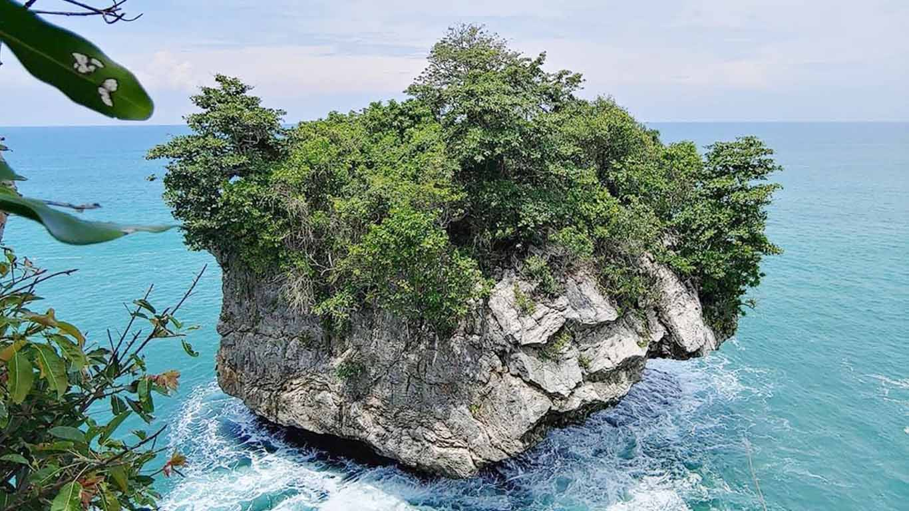

Pantai
Karang Bokor
Pantai dengan pemandangan karang besar dan ombak yang indah, cocok untuk bersantai dan fotografi.
Temukan tempat-tempat terbaik di Kabupaten Lebak
Pantai dengan pemandangan karang besar dan ombak yang indah, cocok untuk bersantai dan fotografi.
Tempat hiking dengan pemandangan panoramik yang menakjubkan dan udara segar pegunungan.
Pantai cantik dengan pasir putih dan ombak yang cocok untuk berselancar maupun berenang.
Destinasi wisata alam dengan pemandangan perbukitan dan lembah yang asri dan menyejukkan.
Kabupaten Lebak di Banten Selatan menyimpan kekayaan alam yang luar biasa. Dari pegunungan hijau yang sejuk hingga pantai berpasir putih yang memesona, Lebak menawarkan pengalaman wisata alam yang tak terlupakan.
Dengan budaya yang kaya dan masyarakat yang ramah, Lebak merupakan destinasi sempurna bagi pecinta alam dan petualang.
Pelajari Lebih LanjutMengenal tradisi unik masyarakat Lebak
Seba Baduy adalah tradisi tahunan masyarakat Baduy sebagai bentuk penghormatan kepada alam dan leluhur. Dalam acara ini, masyarakat Baduy membawa hasil bumi ke pusat pemerintahan sebagai simbol rasa syukur.
Tradisi ini mencerminkan kearifan lokal dan hubungan harmonis antara manusia dengan alam sekitar.
Pelajari Budaya LainnyaPengalaman mereka menjelajahi Lebak
"Pantai Sawarna sangat indah! Pasir putihnya halus dan airnya jernih. Pengalaman tak terlupakan!"

"Pendakian ke Gunung Luhur cukup menantang tetapi pemandangan dari puncaknya spektakuler!"
Punya pertanyaan tentang wisata di Lebak?
Rangkasbitung Lebak Banten
+62 123 **** **33
muhamadbahron04@outlook.com